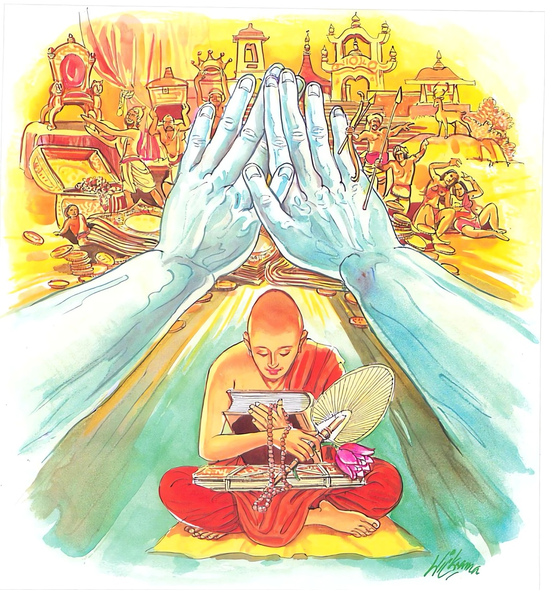

6-9 පවුලම මහණ වීම
මෙම කතාව ධම්මපද අටුවාවෙන් ද කියවන්න.
න අත්තහෙතු න පරස්ස හෙතු
න පුත්තමිච්ඡෙ න ධනං න රට්ඨං
න ඉච්ඡෙය්ය අධම්මෙන සමිද්ධිමත්තනො
ස සීලවා පඤ්ඤවා ධම්මිකො සියා.
පණ්ඩිත තෙම තමා හේතු කොට ගෙන ද (තමා පිණිස ද) පව් නො කරන්නේ ය. මෙරමා හේතු කොට ගෙන ද (අනුන් පිණිස ද) පව් නො කරන්නේ ය. පව්කම් කිරීමෙන් ලැබියැ යුතු පුතකුදු නො කැමැති වන්නේ ය. පව්කම් කිරීමෙන් ලැබියැ යුතු ධනය ද නො කැමැති වන්නේ ය. පව්කම් කිරීමෙන් ලැබියැ යුතු රට ද නො කැමැති වන්නේ ය. අධර්මයෙන් ලැබියැ යුතු සමෘද්ධිය ද නො කැමැති වන්නේ ය. මෙසේ වූ ඒ පුද්ගල තෙමේ සිල්වත් නමුදු ප්රඥාවත් නමුදු ධාර්මික නමුදු වන්නේ ය.

සැවැත් නුවර එක්තරා උපාසකයෙක් වෙසෙ යි. ඔහු ඉතා දැහැමි ය. කල් යත් ඔහුට බුදුසසුන්හි පැවිදිවීමට ආශාවක් උපන. දිනක් ඔහු සියඹුව හා කා බී අවසන් කොට පිළිසඳර කතාවෙහි යෙදුනේ ‘සොඳුර! කලක සිට ම මට මහණවන්නට පැවිදිවන්නට සිතෙක් ඉපද තිබේ ය’ යි කී ය. එවිට අඹුව ‘පොඩ්ඩක් ඉන්න! ටිකක් ඉවසන්න! මේ කුස ඉන්නා ලමයා බිහිවනතුරු’ යි කීවා ය. ඔහු එයට ඇහුම් කන් දී ලමයා බිහි ව පයින් ඇවිදින තුරු බලාපොරොත්තුව හිඳ, නැවැතත් දවසෙක මහණවීමේ ආශාව අඹුවට කී ය. එයට ද අඹුව කීවා, ‘ලමයා ටිකක් ඇතිදැඩි වනතුරු නවතින්නට ය’ යි. එවිට උපාසක තෙමේ ‘අනේ! මෑ විචාරීමෙන් හෝ නො විචාරීමෙන් මට වැඩක් නො වේ, මෑ ගැණ බලා සිටියොත් මට වන්නේ මහත් නපුරෙකි, මෑ ගැණ බැලුවොත් මෑ කියන්නට කන් දුන්නොත් කන් නතු කළොත් මට සසර දුකින් නිදහසෙක් නො වේ, මාගේ දුක්, මා ම කෙළවර කරගත යුතු ය, අනිකකුට ඒ නො කළ හැකි ය’ යි කියා ගෙන් නික්ම ගොස් පැවිදි විය. පැවිදි වූ දා සිට මහත් වැරෙන් කමටහන් වඩා පැවිදිබව මුදුන් පෙත්තට නගා ගෙණ අඹුවත් පුතත් දකින රිසියෙන් සැවැත් නුවරට ගියේ ය. එහිදී පුතා හමුව ඔහුට බණ කී ය. බණ අසා ඔහු ද සසරට කලකිරුනේ ය. පැවිදි විය. වැඩි. දවස් නොයා දී ම රහත් බවට ද පැමිණියේ ය. අඹුව මේ දැන ‘යම් කෙනකුන් නිසා මම මේ ගෙයි වසම් ද, ඒ දෙදෙන ම ගෙන් නික්ම ගොස් පැවිදිව වෙසෙත්, මටත් දැන් මේ ගෙයින් වැඩෙක් නැත, පැවිදි වෙමි’ යි සිතා ගේ හැර ගොස් පැවිදිව මහණදම් කොට කල් නො යවා ම රහත් වූ ය.
දිනෙක දම්සබාවෙහි ‘ධම්මික උපාසක තෙමේ තමා ඉතා දැහැමි බැවින් ගේ දොර හැර ගොස් පැවිදිව රහත් බවට ද පැමිණ අඹු දරුවනට ඒ අතිනුත් පිහිට වි ය’ යි භික්ෂූන් අතර කතාවක් උපන. ඒ අතර බුදුරජානන් වහන්සේ එහි වැඩි සේක් භික්ෂූන්ගේ කතාව අසා ‘මහණෙනි. නුවණැත්තහු විසින් තමන් නිසා හෝ අනුන් නිසා හෝ නො දැහැමි දියුණුවක් සම්පත්තියක් බලාපොරොත්තු නො විය යුතු ය, බලාපොරොත්තු වන්නහු විසින් ධාර්මික සමෘද්ධියක් ම බලාපොරොත්තු විය යුතු ය, ඔහු ධාර්මිකයකු, ධර්මය පිළිසරණ කොට වසන්නකු විය යුතු ය’ යි අනුසන්ධි ගළපා මේ ධර්මදේශනාව කළ සේක:
න අත්තහෙතු න පරස්ස හෙතු
න පුත්තමිච්ඡෙ න ධනං න රට්ඨං,
න ඉච්ඡෙය්ය අධම්මෙන සමිද්ධිමත්තනො
ස සීලවා පඤ්ඤවා ධම්මිකො සියා.
තමා හේතු කොට පව්කම් නො කරන්නේ ය. අනුන් හේතු කොට ද පව්කම් නො කරන්නේය. පුතකුදු නො කැමැති වන්නේ ය. ධනය ද නො කැමැති වන්නේ ය. රටක් ද බලාපොරොත්තු නො වන්නේ ය. නො දැහැමින් තමාගේ සමෘද්ධියක බලාපොරොත්තු නො වන්නේ ය. ඒ පුද්ගල තෙමේ සිල්වත් වන්නේ ය. නුවණැත්තේ වන්නේ ය. දැහැමි වන්නේ ය.
න අත්තනෙතු = තමා හේතු කොට පව්කම් නො කරන්නේ ය.
මෙහි අත්ත හෙතු, නම් ස්වකීය ජීවිතහේතුව යි. මුග්ධ වූ ලෝකය ස්වකීය ජීවිතය රැකගණු පිණිස පරපණ නැසුම් ආදී වූ නන් වැදෑරුම් පව්කම් කරයි. කියනු තබා සිතනු බැරි පව්කම් ආත්මපොෂණය පිණිස කරන්නේ ය. ඇතැම් කෙනකු බඩ වියත රැකුමට කරණ කර්මයෝ ඇසීම් පමණකිනුදු අන්යයා තැති ගන්වති. ලොමු ඩැහ ගන්වති.
න පරස්ස හෙතු = අනුන් හේතු කොට පව්කම් නො කරන්නේය.
මවුපිය අඹුදරු නෑ මිතුරු ආදීන් නිසා පව්කම් කරන්නේ ය, ලෝකය. පරස්ස හෙතු, යි වදාළෝ එහෙයිනි. එසේ කරන්නා වූ පව්කම් ද සමහර විටෙක ඉතා බිහිසුණු ය. ඇතැම් කෙනෙක් අඹුව නිසා මවුපියන් මරති. දූ දරුවන් නිසා අඹුව මරති. ඈ ලෙසින් කරන පව්කම් ද ලෝකයා අතර ඇත්තේ ය. සතුන් මැරීම් හොරකම් කිරීම් ආදි හැම පව් කමක් ම කරණුයේ තමන් හේතු කොට හෝ අනුන් හේතු කොටය. තමන් හා අනුන් හා හේතු කොටත් කරෙන්නේ ය. ‘න අත්තහේතු න පරස්ස හෙතු’ යි වදාළෝ නුවණැත්තහු උකුණු හිසක් තරමකුදු පවක් තමන් නිසාවත් අනුන් නිසාවත් නො කරන බව දැක්වීමට ය.
න පුත්තං ඉච්ඡෙ = පුතකු නො පතන්නේ ය.
න ධනං = ධනය නො කැමැති වන්නේ ය.
න රට්ඨං = රටක් නො කැමැති වන්නේය.
තමන් උදෙසා හෝ අනුන් උදෙසා නුවණැත්තේ පව්කමින් පුතකු ලබන්නට, ධනය ලබන්නට, රටක් ලබන්නට බලාපොරොත්තු නො වේ. මේ තබා පව්කමින් ලැබෙන සක්විති සැපත ද නුවණැති මිනිසා හැර දමන්නේ ය.
“ධනං චජෙ යො පන අඞ්ගහෙතු
අඞ්ගං චජෙ ජීවිතං රක්ඛමානො,
අඞ්ගං ධනං ජීවිතං චාපි සබ්බං
චජෙ නරො ධම්මමනුස්සරන්තො”
ශරීරාවයව රකින්නට ධනය දෙන, ජීවිතය රකින්නට ශරීරාවයව දෙන නුවණැති මිනිසා දහම් සිහි කරමින් ධර්මය රැක ගන්නට යුතුකම් ඉටු කරන්නට ශරීරාවයව ධන ජීවිත යන මේ හැම දෙයක් ම හැර දමන්නේ ය. නිසිසේ නුවණ දියුණු කළ මිනිසා කො තරම් උසස් ද, යනු මේ ගාථාවෙන් දත හැකි ය.
න ඉච්ඡෙය්ය අධම්මෙන සමිද්ධිංඅත්තනො = නො දැහැමින් තමන්ගේ සමෘද්ධියක නො කැමැති වන්නේ ය.
නුවණැත්තේ අධර්මයෙන් කිසිත් දියුණුවක් තමහට වේවා යි නො පතන්නේ ය. අධර්මයෙන් ලැබුන ද ඒ වහා හැර ලන්නේ ය. දහම් නිසා දහම් සිහි කරමින් සිය දිවි හරින්නේ ය. කිසිකලෙක අධර්මයෙන් කිසිවක් නො ගන්නේ ය. නො පතන්නේ ය. අද ලෝකය මෙසේ නො වේ. තණපතට පවා පරපණ නසන්නේ ය. ජඩකම් කරන්නේ ය. එකිනෙකා ඇණ කොටා ගන්නේ ය. දැහැමි මිනිසා ජීවිතය නිසා ද උකුණකු මකුණකු පවා ද දිවියෙන් තොර නො කරන්නේ ය.
සො සීලවා පඤ්ඤවා ධම්මිකො සියා = ඔහු සිල් ඇත්තේ, නුවණැත්තේ, දැහැමි වන්නේ ය.
යමෙක් තමන් නිසා හෝ අනුන් නිසා පව් නො කෙරේද, පුතකු හෝ ධනයක් හෝ රටක් හෝ පව්කමින් ලබා ගැණීමට අයත් කර ගැණීමට, හදා වඩා ගැණීමට කැමැති නො වේ ද, තමන්ගේ දියුණුවක් අධර්මයෙන් සිදුකර ගැණීමට බලාපොරොත්තු නො වේ ද, ඔහු සිල්වතෙක්, නුවණැත්තෙක්, දැහැමියෙක් වේ ය, යි මේ ගසින් වදාළ සේක.
දශකුශලධර්මය මුල් කොට නෛර්ය්යාණිකධර්මයන්හි අවිරුද්ධ ප්රතිපදාවන්හි පිහිටියේ ධාර්මික යි කියනු ලැබේ. ‘ධම්මෙ පසන්නො, ධම්මෙ ඨිතො, ධම්මෙ නියුත්තො, ධම්මො අස්ස අත්ථි’ යි යන මේ කොයි ලෙසකින් වෙන්කොට බැලුව ද වරද නැත.
මේ ධර්ම දේශනාවගේ අවසානයෙහි බොහෝ දෙන සෝවන් ඵලාදියට පැමිණියාහු ය.
ධාර්මිකස්ථවිර වස්තුව නිමි.